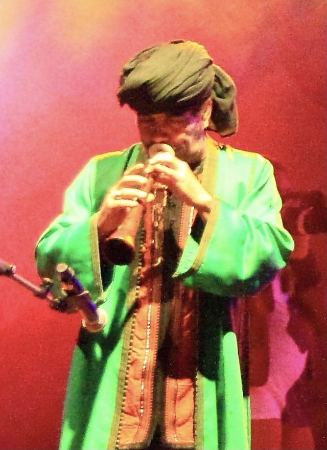

Home / Living Traditions / Mediterranean
Playable heritage gameRhaita
The rhaita is a double-reed oboe of the Maghreb. A slim dark body carries a small brass-coloured disc at the lips and opens into a short flaring bell. Its sound is piercing and nasal, made to carry over drums at weddings and festivals.


How to play
- A covered hole glows; an open hole shows its dark bore. Seven notes of the mode are lit down the tube.
- Each strike shows the fingering of that note and the bell opens as it sounds.
- Keep the phrases lively and the long notes steady.
Rules at a glance
- A phrase is a line of notes, each struck close to its beat.
- Long notes swell slowly: strike on the beat and let them ring.
- The round ends when the last note has been judged; the score is the share of the best possible.
About the tradition
It leads the processions and dance bands of Morocco and its neighbours, where it plays above the drums.
Origins
A living tradition passed from person to person; it is not tied to a single dated origin. It belongs to the cultural world of Mediterranean.
Credits
- Tradition: the rhaita; phrases written for this game
- Photo: Schorle, CC BY-SA 3.0, source on Wikimedia Commons
- Text: CC BY-SA 4.0, World Heritage Games.
Sources

Get the app
Rhaita is coming to the App Store and Google Play. One app, many traditions, no account needed.
Coming to theApp StoreComing toGoogle Play
More games to play

Mijwiz Double Clarinet
Lebanon +3 · Musical instrumentsPlay preview · in the Music & Dance of the World app


More from Morocco


Moroccan Mint Tea High Pour
Morocco · Crafts and makingPlay preview · in the Kitchen Crafts of the World app
Tifinagh Letter Puzzle
Niger +3 · Puzzles and mind games